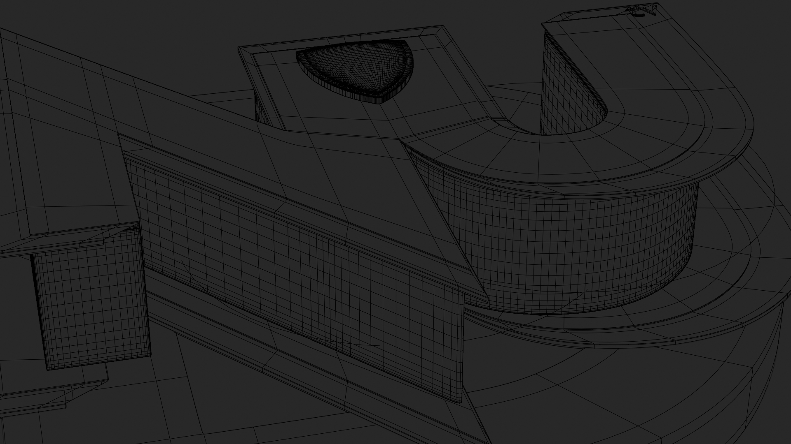
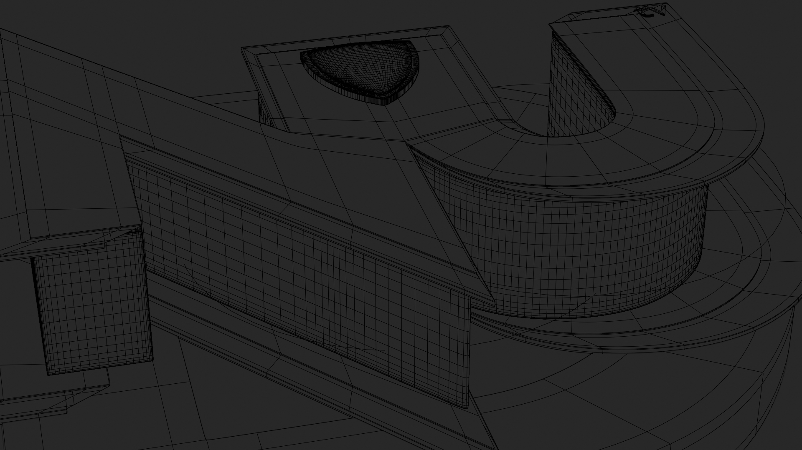

[title] NUD TV Intro
[description] This project was a special commission for a school organization, where I was asked to create a lively, news-inspired logo animation. Using Blender, I brought their brand to life by experimenting with camera movements and projection mapping to get the look and feel just right. It was a rewarding experience to turn their ideas into a professional intro that gives their news segments a fresh, dynamic energy.
 
